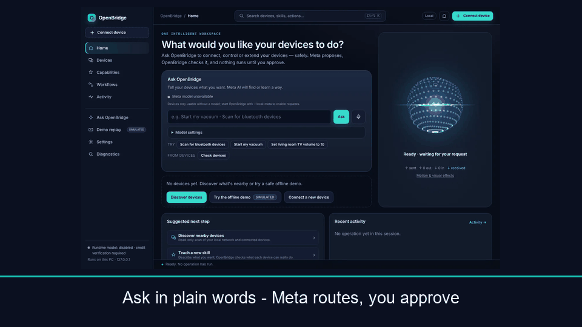
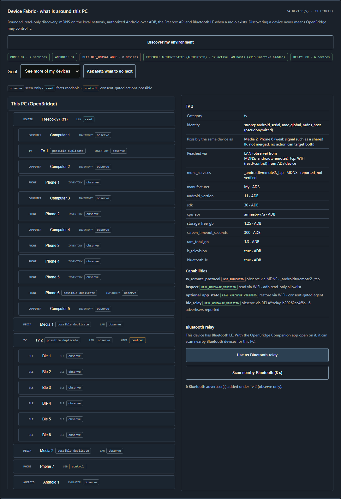
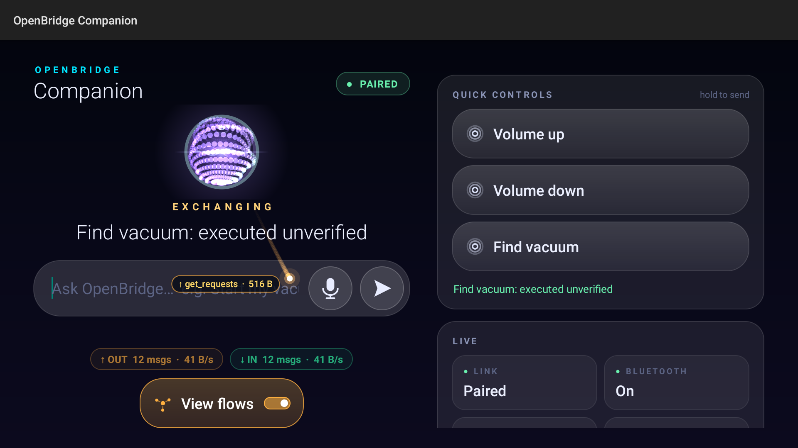
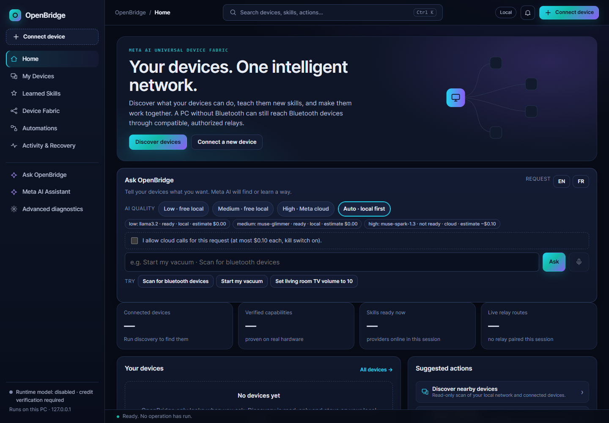
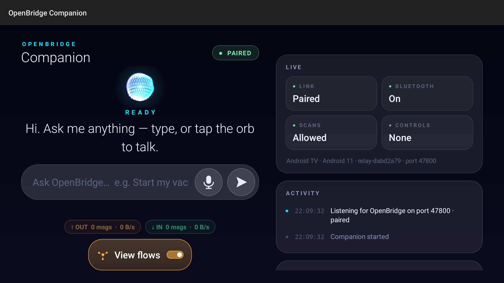
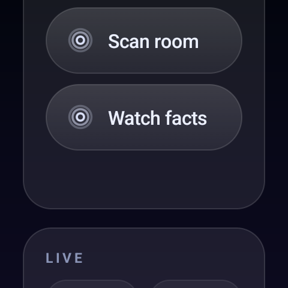
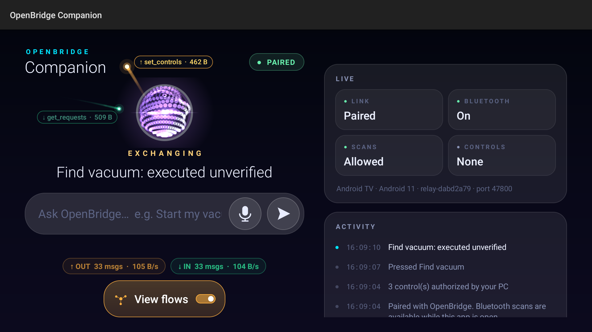
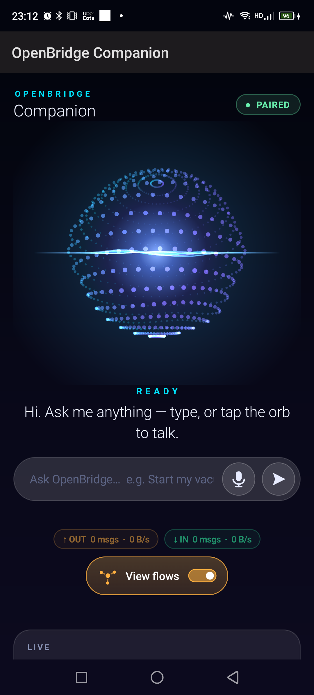
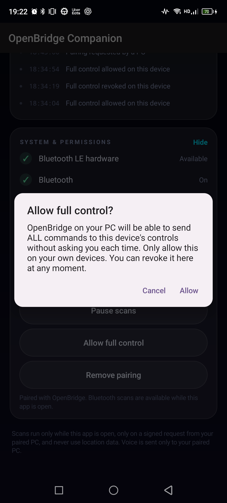

OpenBridge uses Meta AI to help different devices understand, connect, and control one another — through verified capabilities, explicit authorization, and observable results.


OpenBridge discovers everything on your network, learns what each device can verifiably do, and lets Meta AI compose new cross-device controls — a TV panel that operates your robot vacuum, a watch button that quiets the living room.
Meta models do the understanding. Deterministic safety gates do the enforcing: every AI proposal passes strict validation, owner approval, and independent read-back before anything happens. Every run ends with a receipt.
Local Muse Glimmer proposes the panel. OpenBridge validates every control
against authorized capabilities, installs it on the real Android TV, and dispatches
the press to the vacuum over the approved Tuya interface — then revokes it, with
denial verified. Receipt tx-4a96f8f6, 15-poll oracle stable.


Honest limits: panel installation, dispatch, receipts, and revocation are verified on real hardware; the vacuum was already docked/cleaning so motion was not observed. Owner-gated manual-press runs are scripted in the physical runbook. Full arc: storyboard · S5 proof · S5b proof.
Scan for bluetooth devices → preview exactly what will change → approve → read the receipt. French accepted too. No fixed command grammar: tiered Meta-only routing resolves requests to registered skills.
Bluetooth via phone/TV relays (with a proven TV-to-phone handover), Freebox LAN inventory (127 known / 12 active hosts), a second PC, a Tuya vacuum. This PC has no Bluetooth radio — reach comes through relays.

Phone, Android TV, and Galaxy Watch7 Companions are paired and operational on real hardware; a second Windows PC runs owner jobs. ESP32 runs natively under QEMU (physical deployment pending); more ports are planned, not claimed.

One tap revokes standing consent; every refused press lands in the Activity timeline with a server-composed reason. Journaled setting changes get per-change RESTORED / FAILED / MANUAL verdicts; physical acts are labeled non-undoable before you approve.

set_controls([]): zero grants left, re-press denied.Local-first: Llama 3.2 3B (CPU) triages, Muse Glimmer 30B (GPU/CPU) plans and explains — both digest-pinned, no cloud fallback. Hosted Muse Spark 1.3 answers only synthetic facts, only with explicit consent, inside a hard budget. The runtime is Meta-models-only, enforced in code. Full design in the architecture document.
| Surface | Status |
|---|---|
| Android phone, Android TV, Galaxy Watch7 Companions | REAL HARDWARE installed, paired, controls rendered, commands dispatched |
| Freebox Delta router, Tuya robot vacuum, 2nd Windows PC | REAL HARDWARE reads + consented commands with read-back |
| 7 Linux / legacy-Windows guests (QEMU) | FULL GUEST OS agent protocol proven, labeled as VMs |
| Pixel 6 AVD, ESP32 native IDF agent | OFFICIAL EMULATOR proven, never counted as physical |
Hardware matrix · evidence registry (30 VERIFIED rows) · claim ↔ evidence · known limitations


Discovery would still list devices — but nothing would understand a request, compose a control panel, propose a plan, or explain a device in usable words. Favorable and unfavorable results are both published:
e2e CI job failing while unit/browser suites are greenWindows, Linux, or macOS · Python 3.14 · zero third-party runtime packages.
# 1,245 controlled tests — no hardware needed git clone https://github.com/toskaman/openbridge.git cd openbridge python -m unittest discover -s tests python -m src.cli judge demo # offline demo → DEMO_COMPLETE python -m src.server # → http://127.0.0.1:18765
Local Meta models: dev.start_local_meta (Llama 3.2 3B) and
dev.start_glimmer (Glimmer 30B, ~18 GB). Full guide:
QUICKSTART ·
CLI reference ·
jury fast-track.
Push the Frontier: Meta models inspect unfamiliar physical devices, identify verified interfaces, synthesize missing authorized capabilities, and coordinate heterogeneous hardware — beyond generic chatbots. Build for Your World: useful devices that couldn’t cooperate now can.
Built from the ground up during the event (start ref 2026-10-26T16:24:00Z; zero files predate it; an earlier private prototype was rewritten from scratch). Track: Indie Developer, solo. Scoring and bonus details marked T-P ONLY or OPEN in the compliance checklist must be verified in the portal; no award is claimed.
OpenBridge was built by an autistic independent developer, passionate about hardware, AI, and interoperability since childhood — finding out how systems work, and making them work together.